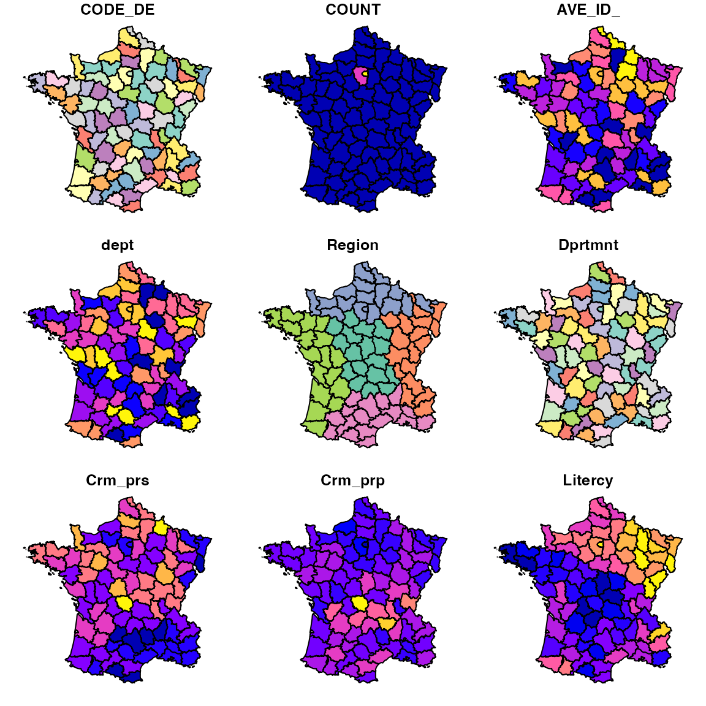
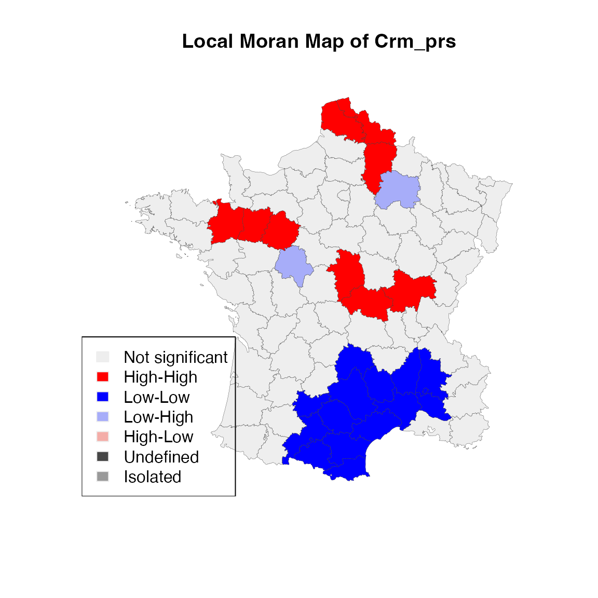
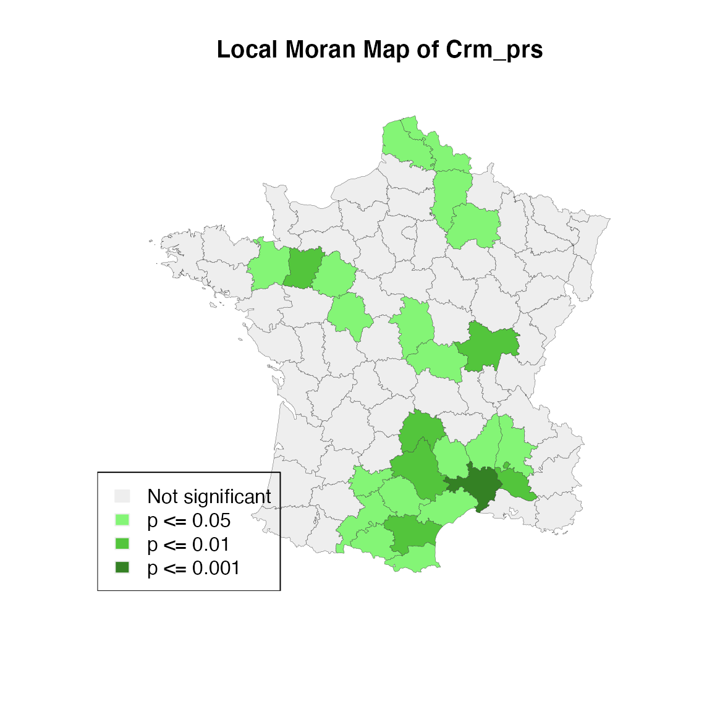

rgeoda is an R library for spatial data analysis. It is
an R wrapper of the libgeoda C++ library, which is built based on the
GeoDa software. The version used in this tutorial is
version 0.0.8.
rgeoda
The rgeoda package can be installed using “install.packages()” command:
install.packages("rgeoda"), and then can be loaded using the customary “library()” command:
## Loading required package: digestIn addition, the package sf needs to be loaded, since it is a dependency:
## Linking to GEOS 3.13.0, GDAL 3.8.5, PROJ 9.5.1; sf_use_s2() is TRUEThe rgeoda package for R relies on the sf (simple features) package
for basic spatial data handling functions. In a typical R workflow, one
first reads a shape file or other GIS format file with the data using
the sf st_read(file path) command. For example, to load the ESRI
Shapefile Guerry.shp comes with the package:
guerry_path <- system.file("extdata", "Guerry.shp", package = "rgeoda")
guerry <- st_read(guerry_path)## Reading layer `Guerry' from data source
## `/Users/runner/work/_temp/Library/rgeoda/extdata/Guerry.shp'
## using driver `ESRI Shapefile'
## Simple feature collection with 85 features and 29 fields
## Geometry type: MULTIPOLYGON
## Dimension: XY
## Bounding box: xmin: 47680 ymin: 1703258 xmax: 1031401 ymax: 2677441
## Projected CRS: NTF (Paris) / Lambert zone IIOnce the spatial object has been created, it can be used to compute a spatial weights matrix using one of the several weights functions in rgeoda.
Spatial weights are central components in spatial data analysis. The
spatial weights represent the possible spatial interactions between
observations in space. rgeoda provides 6 functions to
create 4 different types of spatial weights:
queen_weights(),
rook_weights()
distance_weights()
knn_weights()
distance_weights() and
knn_weights() with kernel parametersContiguity means that two spatial units share a common border of non-zero length. Operationally, we can further distinguish between a rook and a queen criterion of contiguity, in analogy to the moves allowed for the such-named pieces on a chess board. The queen criterion is somewhat more encompassing and defines neighbors as spatial units sharing a common edge or a common vertex.
To create a Queen contiguity weights, one can call the function
queen_weights(sf_obj, order=1, include_lower_order = False, precision_threshold = 0)For example, to create a Queen contiguity weights using the sf object
guerry:
queen_w <- queen_weights(guerry)
summary(queen_w)## name value
## 1 number of observations: 85
## 2 is symmetric: TRUE
## 3 sparsity: 0.0581314878892734
## 4 # min neighbors: 2
## 5 # max neighbors: 8
## 6 # mean neighbors: 4.94117647058824
## 7 # median neighbors: 5
## 8 has isolates: FALSEThe function queen_weights() returns an instance of
Weight object. One can access the meta data of the spatial
weights by accessing the attributes of GeoDaWeight
object:
Weight object
is_symmetric(queen_w)## [1] TRUE
has_isolates(queen_w)## [1] FALSE
weights_sparsity(queen_w)## [1] 0.05813149To access the details of the weights: e.g. list the neighbors of a specified observation:
nbrs <- get_neighbors(queen_w, idx = 1)
cat("\nNeighbors of the 1-st observation are:", nbrs)##
## Neighbors of the 1-st observation are: 36 37 67 69To compute the spatial lag of a specified observation by passing the values of the selected variable:
lag <- spatial_lag(queen_w, guerry['Crm_prs'])
lag## Spatial.Lag
## 1 23047.50
## 2 26919.67
## 3 26195.50
## 4 14401.25
## 5 15038.67
## 6 15749.00
## 7 22111.67
## 8 13672.33
## 9 22859.20
## 10 11475.20
## 11 12200.14
## 12 13278.67
## 13 24734.00
## 14 11752.83
## 15 17992.60
## 16 21974.40
## 17 26711.00
## 18 19344.00
## 19 23696.71
## 20 25108.67
## 21 21643.17
## 22 18306.00
## 23 24280.00
## 24 14451.60
## 25 21047.67
## 26 21421.33
## 27 25961.50
## 28 10869.83
## 29 13415.67
## 30 17172.17
## 31 20238.25
## 32 12504.25
## 33 26723.00
## 34 21772.83
## 35 26462.20
## 36 19252.00
## 37 24683.20
## 38 20607.25
## 39 24412.00
## 40 19373.71
## 41 16000.20
## 42 23993.25
## 43 20337.86
## 44 16818.67
## 45 17113.83
## 46 13013.00
## 47 22133.00
## 48 24093.75
## 49 25661.67
## 50 22190.17
## 51 29030.00
## 52 16951.00
## 53 24509.00
## 54 24982.75
## 55 19491.50
## 56 24176.00
## 57 27639.67
## 58 21274.33
## 59 24510.33
## 60 30166.00
## 61 23459.00
## 62 16184.00
## 63 18002.00
## 64 10910.00
## 65 16251.25
## 66 15572.00
## 67 25884.25
## 68 23020.60
## 69 26495.00
## 70 24690.50
## 71 17339.00
## 72 25522.33
## 73 18970.00
## 74 19701.83
## 75 21841.00
## 76 24520.40
## 77 14025.80
## 78 14565.17
## 79 13306.67
## 80 12579.00
## 81 21529.50
## 82 23474.50
## 83 24373.17
## 84 19900.50
## 85 23373.60The rook criterion defines neighbors by the existence of a common edge between two spatial units. To create a Rook contiguity weights, one can call function:
rook_weights(sf_obj, order=1,include_lower_order=False, precision_threshold = 0)For example, to create a Rook contiguity weights using the sf object
guerry:
rook_w <- rook_weights(guerry)
summary(rook_w)## name value
## 1 number of observations: 85
## 2 is symmetric: TRUE
## 3 sparsity: 0.0581314878892734
## 4 # min neighbors: 2
## 5 # max neighbors: 8
## 6 # mean neighbors: 4.94117647058824
## 7 # median neighbors: 5
## 8 has isolates: FALSEThe weights we created are in memory. To save the weights to a file, one can call the function:
save_weights(gda_w, id_variable, out_path, layer_name = "")The id_variable defines the unique value of each
observation when saving a weights file
The layer_name is the layer name of loaded dataset. For
a ESRI shapefile, the layer name is the file name without the suffix
(e.g. Guerry).
For example, using Guerry dataset, the column “CODE_DE” can be used as a key to save a weights file:
save_weights(rook_w, guerry['CODE_DE'], out_path = '/Users/xun/Downloads/Guerry_r.gal',
layer_name = 'Guerry')## [1] FALSEThe most straightforward spatial weights matrix constructed from a
distance measure is obtained when i and j are considered neighbors
whenever j falls within a critical distance band from i. In order to
start the distance based neighbors, we first need to compute a threshold
value. rgeoda provides a function
min_distthreshold to help you find a optimized distance
threshold that guarantees that every observation has at least one
neighbor:
min_distthreshold(GeoDa gda, bool is_arc = False, is_mile = True)
To create a Distance based weights, one can call the function `distance_weights`:Then, with this distance threshold, we can create a distance-band weights using the function:
distance_weights(geoda_obj, dist_thres, power=1.0, is_inverse=False, is_arc=False, is_mile=True)For example:
dist_thres <- min_distthreshold(guerry)
dist_thres## [1] 96726.14
dist_w <- distance_weights(guerry, dist_thres)
summary(dist_w)## name value
## 1 number of observations: 85
## 2 is symmetric: TRUE
## 3 sparsity: 0.0434602076124567
## 4 # min neighbors: 1
## 5 # max neighbors: 7
## 6 # mean neighbors: 3.69411764705882
## 7 # median neighbors: 4
## 8 has isolates: FALSEA special case of distance based weights is K-Nearest neighbor
weights, in which every obersvation will have exactly k neighbors. It
can be used to avoid the problem of isolate in distance-band weights
when a smaller cut-off distance is used. To create a KNN weights, we can
call the function knn_weights:
knn_weights(gda, k, power = 1.0,is_inverse = False, is_arc = False, is_mile = True)For example, to create a 6-nearest neighbor weights using Guerry:
knn6_w <- knn_weights(guerry, 6)
summary(knn6_w)## name value
## 1 number of observations: 85
## 2 is symmetric: FALSE
## 3 sparsity: 0.0705882352941176
## 4 # min neighbors: 6
## 5 # max neighbors: 6
## 6 # mean neighbors: 6
## 7 # median neighbors: 6
## 8 has isolates: FALSEKernel weights apply kernel function to determine the distance decay in the derived continuous weights kernel. The kernel weights are defined as a function K(z) of the ratio between the distance dij from i to j, and the bandwidth hi, with z=dij/hi.
The kernel functions include
Two functions are provided in rgeoda to create kernel
weights.
kernel_weights for Kernel Weights with adaptive
bandwidth
To create a kernel weights with fixed bandwith:
bandwidth <- min_distthreshold(guerry)
kernel_w <- kernel_weights(guerry, bandwidth, kernel_method = "uniform")
summary(kernel_w)## name value
## 1 number of observations: 85
## 2 is symmetric: FALSE
## 3 sparsity: 0.0434602076124567
## 4 # min neighbors: 1
## 5 # max neighbors: 7
## 6 # mean neighbors: 3.69411764705882
## 7 # median neighbors: 4
## 8 has isolates: FALSEThe arguments is_inverse, power,
is_arc and is_mile are the same with the
distance based weights. Additionally, kernel_weights has
another argument that user can specify:
use_kernel_diagonals
(optional) FALSE (default) or TRUE, apply kernel on the diagonal of weights matrixkernel_knn_weights for Kernel Weights with adaptive
bandwidth
To create a kernel weights with adaptive bandwidth or using max Knn distance as bandwidth:
adptkernel_w = kernel_knn_weights(guerry, 6, "uniform")
summary(adptkernel_w)## name value
## 1 number of observations: 85
## 2 is symmetric: FALSE
## 3 sparsity: 0.0705882352941176
## 4 # min neighbors: 6
## 5 # max neighbors: 6
## 6 # mean neighbors: 6
## 7 # median neighbors: 6
## 8 has isolates: FALSEThis kernel weights function two more arguments that user can specify:
adaptive_bandwidth
(optional) TRUE (default) or FALSE: TRUE use adaptive bandwidth calculated using distance of k-nearest neithbors, FALSE use max distance of all observation to their k-nearest neighbors
use_kernel_diagonals
(optional) FALSE (default) or TRUE, apply kernel on the diagonal of weights matrixrgeoda provides following methods for local spatial
autocorrelation statistics:
For more information about the local spatial autocorrelation statisticis, please read Dr. Luc Anselin’s lab notes: http://geodacenter.github.io/workbook/6a_local_auto/lab6a.html.
The Local Moran statistic is a method to identify local clusters and
local spatial outliers. For example, we can call the function
local_moran() with the created Queen weights and the data
“crm_prp = guerry[‘Crm_prp’]” as input parameters:
crm_prp = guerry["Crm_prp"]
lisa <- local_moran(queen_w, crm_prp)The local_moran() function will return a
lisa object, and we can access its values/results of lisa
computation using the following functions:
For example, we can call the function lisa_values() to
get the values of the local Moran:
lms <- lisa_values(gda_lisa = lisa)
lms## [1] 0.0154319783 0.3270633224 0.0212952962 0.0046105448 -0.0028342407
## [6] 0.4149377158 -0.1379463091 0.0998657692 0.2823176310 0.1218745112
## [11] -0.0951205417 0.0326111938 0.3878324535 1.1888723840 -0.6452792226
## [16] -0.3096492740 0.3662775143 2.0375343539 -0.0050154800 0.0697110572
## [21] 2.2720355722 0.2886391551 -0.0070189726 -0.0009906605 0.9517469793
## [26] 0.7648322095 0.0432039929 -0.0045362842 -0.0964911860 0.0952360887
## [31] 0.0100895206 -0.0109401003 -0.0544245927 -0.0345553975 0.0887531916
## [36] 0.0954232056 0.0383617454 -0.1776714441 0.1638208393 1.2309154898
## [41] 2.9077203402 -0.0396340261 0.4458735227 0.2491123240 0.0905643622
## [46] -0.6212977834 -0.0308773407 0.0375870399 0.2270376112 -0.0918254739
## [51] -0.0112400086 0.1085584763 -0.0055113129 -0.0027097589 0.7235016208
## [56] 0.0163129939 0.4246564560 0.3787307767 -0.0597158189 0.5050011802
## [61] 2.7632125275 0.0656510809 0.1771899330 -0.0572150317 0.4943795537
## [66] 0.2870386197 -1.4593300774 -0.0055305930 0.4895990016 -0.0324125662
## [71] 2.1366499813 0.9041683235 0.7053678641 1.4098290925 0.0051652159
## [76] 0.2238144189 -0.1621373954 0.0195632289 -0.3233724187 -0.0337778226
## [81] 0.0118189869 -0.1164679533 -0.5699624657 -0.0859634996 0.2085373916To get the pseudo-p values of significance of local Moran computation:
pvals <- lisa_pvalues(lisa)
pvals## [1] 0.414 0.123 0.001 0.474 0.452 0.087 0.243 0.326 0.299 0.303 0.237 0.461
## [13] 0.248 0.015 0.178 0.166 0.124 0.003 0.456 0.346 0.053 0.145 0.431 0.425
## [25] 0.005 0.037 0.465 0.395 0.138 0.316 0.495 0.431 0.359 0.129 0.295 0.058
## [37] 0.090 0.231 0.258 0.018 0.026 0.455 0.073 0.057 0.222 0.023 0.369 0.338
## [49] 0.282 0.359 0.483 0.252 0.450 0.434 0.138 0.327 0.063 0.005 0.097 0.292
## [61] 0.001 0.217 0.237 0.126 0.145 0.344 0.008 0.340 0.079 0.300 0.033 0.142
## [73] 0.001 0.001 0.460 0.005 0.212 0.384 0.110 0.409 0.455 0.353 0.006 0.287
## [85] 0.128To get the cluster indicators of local Moran computation:
cats <- lisa_clusters(lisa, cutoff = 0.05)
cats## [1] 0 0 1 0 0 0 0 0 0 0 0 0 0 1 0 0 0 1 0 0 0 0 0 0 2 2 0 0 0 0 0 0 0 0 0 0 0 0
## [39] 0 1 1 0 0 0 0 3 0 0 0 0 0 0 0 0 0 0 0 2 0 0 1 0 0 0 0 0 3 0 0 0 2 0 2 2 0 2
## [77] 0 0 0 0 0 0 3 0 0The predefined values of the indicators of LISA cluster are:
0 Not significant
1 High-High
2 Low-Low
3 High-Low
4 Low-High
5 Undefined
6 Isolatedwhich can be accessed via the function
lisa_labels():
lbls <- lisa_labels(lisa)
lbls## [1] "Not significant" "High-High" "Low-Low" "Low-High"
## [5] "High-Low" "Undefined" "Isolated"By default, the local_moran() function will run with
some default parameters, e.g.:
significance_cutoff: 0.05
permutation: 999
permutation_method: 'complete'
cpu_threads: 6
seed (for random number generator): 123456789, which are identical to GeoDa desktop software so to replicate the results in GeoDa software. You can set different values when calling the lisa functions.
For example, re-run the above local Moran example using 9,999 permutations.
lisa <- local_moran(queen_w, crm_prp, permutations = 9999)Then, we can use the same lisa object to get the new
results after 9,999 permutations:
pvals <- lisa_pvalues(lisa)
pvals## [1] 0.4186 0.1265 0.0004 0.4679 0.4545 0.0728 0.2313 0.3071 0.3115 0.3087
## [11] 0.2187 0.4834 0.2686 0.0102 0.2024 0.1790 0.1320 0.0020 0.4558 0.3519
## [21] 0.0479 0.1376 0.4441 0.4195 0.0032 0.0388 0.4736 0.4188 0.1277 0.3300
## [31] 0.4939 0.4427 0.3393 0.1419 0.2714 0.0606 0.0724 0.2247 0.2628 0.0185
## [41] 0.0214 0.4899 0.0719 0.0589 0.2288 0.0189 0.3759 0.3216 0.2812 0.3735
## [51] 0.4695 0.2743 0.4518 0.4286 0.1471 0.3221 0.0647 0.0025 0.0917 0.2812
## [61] 0.0001 0.2419 0.2462 0.1266 0.1270 0.3553 0.0094 0.3122 0.0724 0.2975
## [71] 0.0307 0.1320 0.0001 0.0002 0.4633 0.0056 0.2162 0.3681 0.1334 0.4069
## [81] 0.4536 0.3547 0.0035 0.3096 0.1277rgeoda uses GeoDa C++ code, in which
multi-threading is used to accelerate the computation of LISA. We can
use the argument ncpu to specify how many threads to run
the computation:
lisa <- local_moran(queen_w, crm_prp, cpu_threads = 4)Get the False Discovery Rate value based on current pseudo-p values:
fdr <- lisa_fdr(lisa, 0.05)
fdr## [1] 0.0005882353Then, one can set the FDR value as the cutoff p-value to filter the cluster results:
cat_fdr <- lisa_clusters(lisa, cutoff = fdr)
cat_fdr## [1] 0 0 0 0 0 0 0 0 0 0 0 0 0 0 0 0 0 0 0 0 0 0 0 0 0 0 0 0 0 0 0 0 0 0 0 0 0 0
## [39] 0 0 0 0 0 0 0 0 0 0 0 0 0 0 0 0 0 0 0 0 0 0 0 0 0 0 0 0 0 0 0 0 0 0 0 0 0 0
## [77] 0 0 0 0 0 0 0 0 0Local Geary is a type of LISA that focuses on squared differences/dissimilarity. A small value of the local geary statistics suggest positive spatial autocorrelation, whereas large values suggest negative spatial autocorrelation. For more details, please read: http://geodacenter.github.io/workbook/6b_local_adv/lab6b.html#local-geary
For example, we can call the function local_geary() with the created Queen weights and the data “crm_prp” as input parameters:
geary_crmprp <- local_geary(queen_w, crm_prp)To get the cluster indicators of the local Geary computation:
lisa_clusters(geary_crmprp)## [1] 0 2 4 0 3 0 0 0 0 0 0 0 0 0 0 0 0 0 0 2 1 0 0 0 2 2 0 0 0 0 0 0 0 4 0 0 0 0
## [39] 0 0 1 0 0 0 1 0 0 0 0 0 3 0 0 0 0 0 0 0 0 0 0 0 0 0 0 0 0 0 0 0 2 0 0 2 0 0
## [77] 0 0 0 0 0 0 4 0 0To get the pseudo-p values of the local Geary computation:
lisa_pvalues(geary_crmprp)## [1] 0.398 0.027 0.025 0.126 0.017 0.314 0.610 0.141 0.284 0.110 0.559 0.456
## [13] 0.211 0.255 0.226 0.211 0.089 0.054 0.182 0.017 0.030 0.216 0.395 0.105
## [25] 0.024 0.033 0.089 0.416 0.504 0.059 0.380 0.254 0.211 0.048 0.113 0.154
## [37] 0.160 0.571 0.310 0.093 0.009 0.130 0.128 0.178 0.039 0.088 0.076 0.319
## [49] 0.291 0.438 0.043 0.464 0.177 0.099 0.100 0.232 0.141 0.317 0.615 0.208
## [61] 0.198 0.299 0.084 0.634 0.148 0.423 0.060 0.108 0.293 0.257 0.032 0.102
## [73] 0.057 0.003 0.706 0.560 0.605 0.066 0.320 0.391 0.175 0.601 0.007 0.365
## [85] 0.238To apply multivariate local geary, we need to define a string with the variable names and use this string to extract the relevant subset from the data frame. For example, we apply multivariate local geary on variables “Crm_prs”, “Crm_prp”, “Litercy”, “Donatns”, “Infants” and “Suicids”:
data <-guerry[c('Crm_prs','Crm_prp','Litercy','Donatns','Infants','Suicids')]
multigeary <- local_multigeary(queen_w, data)To get the cluster indicators of the local Geary computation:
lisa_clusters(multigeary)## [1] 0 1 1 1 0 1 1 1 1 1 1 1 0 0 0 0 0 1 1 1 1 1 0 0 1 1 1 1 0 1 0 0 1 0 0 0 0 0
## [39] 1 0 1 2 1 1 1 0 0 0 1 1 1 0 1 1 0 0 1 1 0 1 1 0 1 0 1 1 0 1 0 1 1 0 1 1 0 1
## [77] 1 1 1 1 0 1 0 1 1There are two types of local Getis-Ord statistics: one is computing a ratio of the weighted average of the values in the neighboring locations, not including the value at the location; while another type of statistic includes the value at the location in both numerator and denominator. For more details, please read: http://geodacenter.github.io/workbook/6b_local_adv/lab6b.html#getis-ord-statistics
A value larger than the mean suggests a high-high cluster or hot spot, a value smaller than the mean indicates a low-low cluster or cold spot.
For example, we can call the function local_g() with the
created Queen weights and the data “crm_prp” as input parameters:
localg_crmprp <- local_g(queen_w, crm_prp)To get the cluster indicators of the local G computation:
lisa_clusters(localg_crmprp)## [1] 0 0 1 0 0 0 0 0 0 0 0 0 0 1 0 0 0 1 0 0 0 0 0 0 2 2 0 0 0 0 0 0 0 0 0 0 0 0
## [39] 0 1 1 0 0 0 0 1 0 0 0 0 0 0 0 0 0 0 0 2 0 0 1 0 0 0 0 0 1 0 0 0 2 0 2 2 0 2
## [77] 0 0 0 0 0 0 1 0 0To get the pseudo-p values of the local G computation:
lisa_pvalues(localg_crmprp)## [1] 0.414 0.123 0.001 0.474 0.452 0.087 0.243 0.326 0.299 0.303 0.237 0.461
## [13] 0.248 0.015 0.178 0.166 0.124 0.003 0.456 0.346 0.053 0.145 0.432 0.425
## [25] 0.005 0.037 0.464 0.395 0.138 0.316 0.495 0.431 0.359 0.129 0.295 0.058
## [37] 0.090 0.231 0.258 0.018 0.026 0.455 0.073 0.057 0.222 0.023 0.369 0.338
## [49] 0.282 0.359 0.483 0.252 0.450 0.434 0.138 0.327 0.063 0.005 0.097 0.292
## [61] 0.001 0.217 0.237 0.127 0.145 0.344 0.008 0.340 0.079 0.300 0.033 0.142
## [73] 0.001 0.001 0.461 0.005 0.212 0.384 0.110 0.409 0.455 0.353 0.006 0.287
## [85] 0.128For the second type of local Getis-Ord statistics, we can call the
function local_gstar() with the created Queen weights and
the data “crm_prp” as input parameters:
localgstar_crmprs <- local_gstar(queen_w, crm_prp)
lisa_pvalues(localgstar_crmprs)## [1] 0.414 0.123 0.001 0.474 0.452 0.087 0.243 0.326 0.299 0.303 0.237 0.461
## [13] 0.248 0.015 0.178 0.166 0.124 0.003 0.456 0.346 0.053 0.145 0.432 0.425
## [25] 0.005 0.037 0.464 0.395 0.138 0.316 0.495 0.431 0.359 0.129 0.295 0.058
## [37] 0.090 0.231 0.258 0.018 0.026 0.455 0.073 0.057 0.222 0.023 0.369 0.338
## [49] 0.282 0.359 0.483 0.252 0.450 0.434 0.138 0.327 0.063 0.005 0.097 0.292
## [61] 0.001 0.217 0.237 0.127 0.145 0.344 0.008 0.340 0.079 0.300 0.033 0.142
## [73] 0.001 0.001 0.461 0.005 0.212 0.384 0.110 0.409 0.455 0.353 0.006 0.287
## [85] 0.128Local Join Count is a method to identify local clusters for binary data by using a local version of the so-called BB join count statistic. The statistic is only meaningful for those observations with value 1. For more details, please read http://geodacenter.github.io/workbook/6d_local_discrete/lab6d.html
For example, we can call the function local_joincount()
with a Queen weights and the data “TopCrm”, which is a set of binary
(0,1) values, as input parameters:
top_crm <- guerry['TopCrm']
localjc_crm <- local_joincount(queen_w, top_crm)To get the pseudo-p values of the local Join Count computation:
lisa_pvalues(localjc_crm)## [1] 0.395 0.085 0.094 NA NA NA 0.255 NA NA NA NA NA
## [13] NA NA NA NA NA NA 0.170 0.242 0.394 NA NA NA
## [25] NA NA 0.111 NA NA NA NA NA NA 0.095 NA NA
## [37] 0.189 NA NA 0.284 NA NA NA NA NA NA 0.218 0.378
## [49] NA 0.367 0.037 0.233 0.174 0.392 NA 0.282 0.028 0.370 0.298 0.106
## [61] NA NA NA NA NA NA NA NA 0.009 0.325 NA NA
## [73] NA NA NA 0.041 NA NA NA NA NA NA NA NA
## [85] NATo get the cluster indicators of the local Join Count computation:
lisa_clusters(localjc_crm)## [1] 0 0 0 0 0 0 0 0 0 0 0 0 0 0 0 0 0 0 0 0 0 0 0 0 0 0 0 0 0 0 0 0 0 0 0 0 0 0
## [39] 0 0 0 0 0 0 0 0 0 0 0 0 1 0 0 0 0 0 1 0 0 0 0 0 0 0 0 0 0 0 1 0 0 0 0 0 0 1
## [77] 0 0 0 0 0 0 0 0 0To get the number of neighbors of the local Join Count computation:
lisa_num_nbrs(localjc_crm)## [1] 4 6 6 4 3 7 3 3 5 5 7 3 3 6 5 5 6 6 7 3 6 7 2 5 6 6 2 6 6 6 4 4 6 6 5 6 5 4
## [39] 6 7 5 4 7 6 6 5 8 4 6 6 5 4 5 4 2 6 3 6 6 2 6 3 3 2 4 2 4 5 7 6 2 3 8 6 5 5
## [77] 5 6 3 6 4 6 6 6 5Bivariate Local Join Count means, in a bivariate local join count, the two events cannot happen in the same location. It is also called “no-colocation” join count. To demonstrate this function, we manually create a new variable:
inv_crm <- 1 - as.data.frame(guerry[,"TopCrm"])[,1] # create no-location case
guerry['Inv_Crm'] <- inv_crmNow, top_crm and inv_crm are no-colocation bivariate cases. Then, we apply the local_bijoicount():
jc <- local_bijoincount(queen_w, guerry[c('TopCrm', 'Inv_Crm')])In case of co-location, a warning message will be raised “The bivariate local join count only applies on two variables with no-colocation.” , and one can use pygeoda.local_multijoincount() for co-location case.
To get the cluster indicators of the multivariate local join count computation:
lisa_pvalues(jc)## [1] 0.106 0.013 0.017 NA NA NA 0.035 NA NA NA NA NA
## [13] NA NA 0.135 NA NA NA 0.040 0.024 0.296 NA NA NA
## [25] NA NA NA NA NA NA 0.208 NA NA 0.398 NA NA
## [37] 0.047 NA NA 0.407 NA NA NA NA NA NA 0.487 0.098
## [49] NA 0.292 0.007 0.416 0.035 0.101 NA 0.076 NA 0.305 0.086 NA
## [61] NA NA NA NA NA NA NA NA 0.001 0.100 NA NA
## [73] NA NA NA 0.005 NA NA NA NA NA NA NA NA
## [85] NATo get the cluster indicators of the local Join Count computation:
lisa_clusters(jc)## [1] 0 1 1 0 0 0 1 0 0 0 0 0 0 0 0 0 0 0 1 1 0 0 0 0 0 0 0 0 0 0 0 0 0 0 0 0 1 0
## [39] 0 0 0 0 0 0 0 0 0 0 0 0 1 0 1 0 0 0 0 0 0 0 0 0 0 0 0 0 0 0 1 0 0 0 0 0 0 1
## [77] 0 0 0 0 0 0 0 0 0Co-location Local Join Count is for where two or more events happen in the same location. Therefore, the function local_multijoincount takes a list of variables with 0/1 values as the input parameter:
bin_data <- guerry[c('TopWealth','TopWealth', 'TopLit')]
jc <- local_multijoincount(queen_w, bin_data)To get the cluster indicators of the multivariate local join count computation:
lisa_pvalues(jc)## [1] NA NA NA 0.256 0.205 NA NA NA NA NA NA NA
## [13] NA NA NA NA NA NA NA NA NA NA NA NA
## [25] NA NA NA NA NA NA NA NA NA NA NA NA
## [37] 0.319 NA NA NA NA NA NA NA NA NA NA NA
## [49] NA NA NA NA NA NA NA NA NA NA NA NA
## [61] NA 0.175 0.192 NA NA NA NA 0.051 NA NA NA NA
## [73] NA NA NA NA NA NA NA NA NA NA NA 0.348
## [85] NAThe quantile local spatial autocorrelation converte the continuous variable to a binary variable that takes the value of 1 for a specific quantile. Then appaly a local join count to the data converted. Two input parameters, k and q, need to be specified in the function pygeoda.quantile_lisa(): k is the number of quantiles (k > 2), and the q is the index of selected quantile lisa ranging from 1 to k.
For example, the examples in section 4.1.5 can be simply implemented as
qsa <- local_quantilelisa(queen_w, crm_prp, 5, 5)To get the p-values and cluster indicators of the quantile LISA computation:
lisa_pvalues(qsa)## [1] 0.419 NA NA NA NA 0.376 NA 0.442 NA 0.257 NA NA
## [13] NA 0.082 0.348 NA 0.277 0.010 NA NA 0.090 0.387 NA NA
## [25] NA NA NA NA NA 0.271 NA 0.447 NA NA NA NA
## [37] NA NA NA 0.026 0.003 NA NA NA NA NA NA NA
## [49] NA NA NA NA NA NA NA NA NA NA NA NA
## [61] 0.001 NA 0.465 NA NA NA NA NA 0.378 NA NA NA
## [73] NA NA NA NA NA NA NA NA NA NA NA NA
## [85] NA
lisa_clusters(qsa)## [1] 0 0 0 0 0 0 0 0 0 0 0 0 0 0 0 0 0 1 0 0 0 0 0 0 0 0 0 0 0 0 0 0 0 0 0 0 0 0
## [39] 0 1 1 0 0 0 0 0 0 0 0 0 0 0 0 0 0 0 0 0 0 0 1 0 0 0 0 0 0 0 0 0 0 0 0 0 0 0
## [77] 0 0 0 0 0 0 0 0 0Multivariate Quantile LISA
For multiple variables, the Quantile LISA can automatiaclly detect if it is the case of no-colocation, in which local_bijoincount() will be called internally, or the case of co-location, in which local_multijoincount() will be called internally.
qsa <- local_multiquantilelisa(queen_w, guerry[c("TopCrm", "TopLit")], c(5,5), c(5,5))To get the p-values and cluster indicators of the quantile LISA computation:
lisa_pvalues(qsa)## [1] NA 0.122 NA NA NA NA 0.023 NA NA NA NA NA
## [13] NA NA NA NA NA NA 0.137 NA NA NA NA NA
## [25] NA NA NA NA NA NA NA NA NA NA NA NA
## [37] 0.412 NA NA NA NA NA NA NA NA NA NA NA
## [49] NA 0.111 NA 0.323 0.012 NA NA NA NA 0.465 NA NA
## [61] NA NA NA NA NA NA NA NA NA NA NA NA
## [73] NA NA NA NA NA NA NA NA NA NA NA NA
## [85] NA
lisa_clusters(qsa)## [1] 0 0 0 0 0 0 1 0 0 0 0 0 0 0 0 0 0 0 0 0 0 0 0 0 0 0 0 0 0 0 0 0 0 0 0 0 0 0
## [39] 0 0 0 0 0 0 0 0 0 0 0 0 0 0 1 0 0 0 0 0 0 0 0 0 0 0 0 0 0 0 0 0 0 0 0 0 0 0
## [77] 0 0 0 0 0 0 0 0 0The bivariate Local Moran’s I captures the relationship between the value for one variable at location i, and the average of the neighboring values for another variable. Please note this statistic needs to be interpreted with caution, since it ignores in-situ correlation between the two variables. The most meaningful application of the bivariate Local Moran statistic is comparing the same variable at two time periods. See: https://geodacenter.github.io/workbook/6c_local_multi/lab6c.html#bivariate-local-moran
qsa <- local_bimoran(queen_w, guerry[c('Crm_prs', 'Litercy')])Spatial clustering aims to group of a large number of geographic areas or points into a smaller number of regions based on similiarities in one or more variables. Spatially constrained clustering is needed when clusters are required to be spatially contiguous.
There are three different approaches explicitly incorporate the contiguity constraint in the optimization process: SKATER, Redcap and Max-p. For more details, please read: * http://geodacenter.github.io/workbook/9c_spatial3/lab9c.html * http://geodacenter.github.io/workbook/9d_spatial4/lab9d.html
For example, to apply spatial clustering on the Guerry dataset, we use the queen weights to define the spatial contiguity and select 6 variables for similarity measure: “Crm_prs”, “Crm_prp”, “Litercy”, “Donatns”, “Infants”, “Suicids”.
data <- guerry[c('Crm_prs','Crm_prp','Litercy','Donatns','Infants','Suicids')]The Spatial C(K)luster Analysis by Tree Edge Removal(SKATER) algorithm introduced by Assuncao et al. (2006) is based on the optimal pruning of a minimum spanning tree that reflects the contiguity structure among the observations. It provides an optimized algorithm to prune to tree into several clusters that their values of selected variables are as similar as possible.
The rgeoda’s SKATER function is:
skater(k, w, data, distance_method='euclidean', bound_vals = [], min_bound = 0, random_seed=123456789)For example, to create 4 spatially contiguous clusters using Guerry dataset, the queen weights and the values of the 6 selected variables:
guerry_clusters <- skater(4, queen_w, data)
guerry_clusters## $Clusters
## [1] 3 2 3 1 1 1 2 1 2 1 1 1 2 1 1 3 3 3 2 4 3 1 2 1 2 2 4 1 1 1 1 1 4 3 4 1 2 1
## [39] 4 3 3 4 2 1 1 1 4 4 2 2 4 2 2 4 2 3 2 2 4 2 3 1 1 1 2 2 1 2 3 4 2 2 2 2 3 2
## [77] 1 1 1 1 3 3 3 2 2
##
## $`Total sum of squares`
## [1] 504
##
## $`Within-cluster sum of squares`
## [1] 113.20764 43.15129 103.93006 84.62611
##
## $`Total within-cluster sum of squares`
## [1] 159.0849
##
## $`The ratio of between to total sum of squares`
## [1] 0.3156447This skater() function returns a names list with names “Clusters”, “Total sum of squares”, “Within-cluster sum of squares”, “Total within-cluster sum of squares”, and “The ratio of between to total sum of squares”.
REDCAP (Regionalization with dynamically constrained agglomerative
clustering and partitioning) is developed by D. Guo (2008). Like SKATER,
REDCAP starts from building a spanning tree in 3 different ways
(single-linkage, average-linkage, and the complete-linkage). The
single-linkage way leads to build a minimum spanning tree. Then, REDCAP
provides 2 different ways (first-order and full-order constraining) to
prune the tree to find clusters. The first-order approach with a minimum
spanning tree is the same as SKATER. In GeoDa and
rgeoda, the following methods are provided:
For example, to find 4 clusters using the same dataset and weights as above using REDCAP with Full-order and Complete-linkage method:
redcap_clusters <- redcap(4, queen_w, data, "fullorder-completelinkage")
redcap_clusters## $Clusters
## [1] 1 2 1 3 3 1 2 3 2 3 3 3 2 1 1 1 1 1 2 1 1 1 2 3 2 2 1 3 3 3 3 3 1 1 1 3 2 3
## [39] 1 1 4 1 2 3 3 3 1 1 2 2 1 2 2 1 2 1 2 2 1 2 1 3 3 3 2 2 3 2 1 1 2 2 2 2 1 2
## [77] 3 3 3 3 1 1 1 2 2
##
## $`Total sum of squares`
## [1] 504
##
## $`Within-cluster sum of squares`
## [1] 161.61898 84.62611 0.00000 80.80101
##
## $`Total within-cluster sum of squares`
## [1] 176.9539
##
## $`The ratio of between to total sum of squares`
## [1] 0.351099Spatially constrained hierarchical clustering is a special form of constrained clustering, where the constraint is based on contiguity (common borders). The method builds up the clusters using agglomerative hierarchical clustering methods: single linkage, complete linkage, average linkage and Ward’s method (a special form of centroid linkage). Meanwhile, it also maintains the spatial contiguity when merging two clusters.
For example, to find 4 spatially constrained clusters using the same dataset and weights as above using Complete-linkage method:
schc_clusters <- schc(4, queen_w, data, "complete")
schc_clusters## $Clusters
## [1] 1 1 1 1 1 1 1 1 1 1 1 1 4 1 1 1 1 1 1 1 3 1 1 1 1 1 1 1 1 1 1 1 1 1 1 1 1 1
## [39] 1 1 2 1 1 1 1 1 1 1 1 1 1 1 1 1 1 1 1 1 1 1 1 1 1 1 1 1 1 1 1 1 1 1 1 1 1 1
## [77] 1 1 1 1 1 1 1 1 1
##
## $`Total sum of squares`
## [1] 504
##
## $`Within-cluster sum of squares`
## [1] 424.2265 0.0000 0.0000 0.0000
##
## $`Total within-cluster sum of squares`
## [1] 79.77355
##
## $`The ratio of between to total sum of squares`
## [1] 0.1582809The automatic zoning procedure (AZP) was initially outlined in Openshaw (1977) as a way to address some of the consequences of the modifiable areal unit problem (MAUP). In essence, it consists of a heuristic to find the best set of combinations of contiguous spatial units into p regions, minimizing the within-sum of squares as a criterion of homogeneity. The number of regions needs to be specified beforehand, as in most other clustering methods considered so far.
rgeoda provides three different heuristic algorithms to
find an optimal solution for AZP:
The original AZP heuristic is a local optimization procedure that cycles through a series of possible swaps between spatial units at the boundary of a set of regions. The process starts with an initial feasible solution, i.e., a grouping of n spatial units into p contiguous regions. This initial solution can be constructed in several different ways. The initial solution must satisfy the contiguity constraints. For example, this can be accomplished by growing a set of contiguous regions from p randomly selected seed units by adding neighboring locations until the contiguity constraint can no longer be met.
azp_clusters <- azp_greedy(5, queen_w, data)
azp_clusters## $Clusters
## [1] 5 2 3 1 1 1 2 1 2 1 1 1 2 1 4 4 3 4 2 3 3 1 2 1 2 2 3 1 1 1 1 1 3 3 3 1 2 1
## [39] 2 3 1 3 2 1 1 1 3 3 2 2 3 2 2 3 2 3 2 2 3 2 1 1 1 1 2 2 1 2 3 3 2 2 2 2 4 2
## [77] 1 1 1 1 4 4 4 2 2
##
## $`Total sum of squares`
## [1] 504
##
## $`Within-cluster sum of squares`
## [1] 124.25983 33.99347 0.00000 76.58057 87.79966
##
## $`Total within-cluster sum of squares`
## [1] 181.3665
##
## $`The ratio of between to total sum of squares`
## [1] 0.3598541To call AZP simulate annealing algorithm, one needs to specify cooling_rate (default: 0.85):
azp_clusters <- azp_sa(5, queen_w, data, cooling_rate = 0.85)
azp_clusters## $Clusters
## [1] 5 2 3 1 1 1 2 1 2 1 1 1 2 1 4 4 3 4 2 3 3 1 2 1 2 2 3 1 1 1 1 1 3 3 3 1 2 1
## [39] 3 3 1 3 2 1 1 1 3 3 2 2 3 2 2 3 2 3 2 2 3 2 1 1 1 1 2 2 1 2 3 3 2 2 2 2 4 2
## [77] 1 1 1 1 4 4 4 2 2
##
## $`Total sum of squares`
## [1] 504
##
## $`Within-cluster sum of squares`
## [1] 124.25983 33.99347 0.00000 80.28310 84.62611
##
## $`Total within-cluster sum of squares`
## [1] 180.8375
##
## $`The ratio of between to total sum of squares`
## [1] 0.3588045To call AZP Tabu search algorithm, one needs to specify tabu_length (deafult: 10) , or conv_tabu (default: 10):
azp_clusters <- azp_tabu(5, queen_w, data, tabu_length = 10, conv_tabu = 10)
azp_clusters## $Clusters
## [1] 4 1 2 3 3 3 1 3 1 3 3 3 2 4 2 2 2 2 1 2 4 2 1 3 1 1 2 3 3 3 2 3 2 2 2 3 1 2
## [39] 2 4 4 2 1 3 2 3 2 2 1 1 2 1 1 2 1 2 1 1 2 1 4 3 3 3 1 1 3 1 4 2 1 1 1 1 5 1
## [77] 3 3 3 3 5 5 2 1 1
##
## $`Total sum of squares`
## [1] 504
##
## $`Within-cluster sum of squares`
## [1] 79.37910 13.42356 34.96496 99.58938 63.84544
##
## $`Total within-cluster sum of squares`
## [1] 212.7976
##
## $`The ratio of between to total sum of squares`
## [1] 0.4222174NOTE: the AZP algorithm is very sensitive to the initial positions for constructing final solutions. Therefore, the random seed, which is used to determine the initial positions, could be used to execute several rounds of max-p algorithms for sensitive analysis.
The so-called max-p regions model (outlined in Duque, Anselin, and Rey 2012) uses a different approach and considers the regionalization problem as an application of integer programming. Besides, the number of regions is determined endogenously.
The algorithm itself consists of a search process that starts with an
initial feasible solution and iteratively improves upon it while
maintaining contiguity among the elements of each cluster.
rgeoda provides three different heuristic algorithms to
find an optimal solution for max-p:
Unlike SKATER and REDCAP that one can specify the number of clusters as an input parameter, max-p doesn’t allow to specify the number of clusters explicitly, but a constrained variable and the minimum bounding value that each cluster should reach that are used to find an optimized number of clusters.
For example, to use the greedy algorithm in maxp
function with the same dataset and weights as above to find optimal
clusters using max-p:
First, we need to specify, for example, every cluster must have population >= 3236.67 thousand people:
bound_vals <- guerry['Pop1831']
min_bound <- 3236.67 # 10% of Pop1831Then, we can call the max-p function with the “greedy” algorithm, the bound values, and minimum bound value:
maxp_clusters <- maxp_greedy(queen_w, data, bound_vals, min_bound)
maxp_clusters## $Clusters
## [1] 7 2 7 1 1 1 2 3 6 3 1 1 8 7 4 4 5 7 2 4 7 3 6 1 8 8 4 1 3 3 3 1 4 5 5 7 2 3
## [39] 5 7 7 4 8 1 3 1 5 5 6 6 5 6 2 4 6 5 2 2 5 8 7 3 3 3 6 6 2 6 2 5 8 8 2 8 4 8
## [77] 1 1 1 1 4 4 4 6 2
##
## $`Total sum of squares`
## [1] 504
##
## $`Within-cluster sum of squares`
## [1] 15.92174 36.87513 19.90470 19.85472 35.54800 48.16380 50.69142 32.85303
##
## $`Total within-cluster sum of squares`
## [1] 244.1875
##
## $`The ratio of between to total sum of squares`
## [1] 0.4844989Note: the results of max-p may be different with GeoDa desktop software, it is caused by the different implementation of boost::unordered_map in version 1.58 (used in GeoDa) and version 1.75 (used in rgeoda via BH package). The keys in boost::unordered_map are not ordered and have different orders in the two Boost versions we used. This involves a different mechanism of randomness in max-p algorithm when picking which area or region to process. Therefore, the results might be slightly different. This is normal and shows the sensitiveness of the max-p algorithm: see https://geodacenter.github.io/workbook/9d_spatial4/lab9d.html#max-p-region-problem for more about sensitivy study of max-p algorithm.
If you want to replicate the identical results as in GeoDa software v1.18.0, please install BH == 1.58.0-1 and build/install rgeoda from source using: devtools::install_github("lixun910/rgeoda")To use tabu search algorithm in maxp function, we can
specify the parameters of tabu_length and conv_tabu:
maxp_tabu_clusters <- maxp_tabu(queen_w, data, bound_vals, min_bound, tabu_length=10, conv_tabu=10)
maxp_tabu_clusters## $Clusters
## [1] 2 5 1 3 3 1 5 1 4 1 1 3 6 1 2 7 2 7 5 8 2 7 4 3 6 6 8 3 1 1 7 3 8 2 7 3 5 7
## [39] 2 2 1 8 6 1 7 3 2 2 4 5 8 4 4 8 4 2 5 5 2 6 1 1 1 1 4 4 3 4 2 2 6 6 5 6 2 6
## [77] 1 1 3 3 8 7 7 4 5
##
## $`Total sum of squares`
## [1] 504
##
## $`Within-cluster sum of squares`
## [1] 66.19164 11.66559 19.22806 19.64391 53.79476 32.85303 37.57316 22.12871
##
## $`Total within-cluster sum of squares`
## [1] 240.9211
##
## $`The ratio of between to total sum of squares`
## [1] 0.4780181To apply simulated annealing algorithm in maxp function
with the parameter of cooling rate:
maxp_sa_clusters <- maxp_sa(queen_w, data, bound_vals, min_bound, cooling_rate=0.85, sa_maxit=1)
maxp_sa_clusters## $Clusters
## [1] 2 3 7 5 5 7 3 1 6 1 7 5 8 7 4 4 2 7 3 4 7 7 6 5 8 8 4 5 1 1 1 5 4 2 2 5 3 1
## [39] 2 7 7 4 8 1 1 5 2 2 6 6 2 6 3 4 6 2 3 3 2 3 7 1 1 1 6 6 5 6 2 2 8 8 3 8 4 3
## [77] 1 1 5 5 4 4 4 6 3
##
## $`Total sum of squares`
## [1] 504
##
## $`Within-cluster sum of squares`
## [1] 26.03889 39.71513 15.20083 19.85472 59.81050 48.16380 19.64391 25.47370
##
## $`Total within-cluster sum of squares`
## [1] 250.0985
##
## $`The ratio of between to total sum of squares`
## [1] 0.4962272We can also increase the number of iterations for local search
process by specifying the parameter iterations (default
value is 99):
maxp_clusters <- maxp_greedy(queen_w, data, bound_vals, min_bound, iterations=199)
maxp_clusters## $Clusters
## [1] 7 2 7 1 1 1 2 3 6 3 1 1 8 7 4 4 5 7 2 4 7 3 6 1 8 8 4 1 3 3 3 1 4 5 5 7 2 3
## [39] 5 7 7 4 8 1 3 1 5 5 6 6 5 6 2 4 6 5 2 2 5 8 7 3 3 3 6 6 2 6 2 5 8 8 2 8 4 8
## [77] 1 1 1 1 4 4 4 6 2
##
## $`Total sum of squares`
## [1] 504
##
## $`Within-cluster sum of squares`
## [1] 15.92174 36.87513 19.90470 19.85472 35.54800 48.16380 50.69142 32.85303
##
## $`Total within-cluster sum of squares`
## [1] 244.1875
##
## $`The ratio of between to total sum of squares`
## [1] 0.4844989NOTE: the max-p algorithm is very sensitive to the initial positions for constructing final solutions. Therefore, the random seed, which is used to determine the initial positions, could be used to execute several rounds of max-p algorithms for sensitive analysis.
For exploratory spatial data analysis (ESDA), rgeoa provides some utility functions to allow users to easily work with sf to visualize the results and do exploratory spatial data analysis.
sf package
The sf package has been popular tool to handle geospatial data. It is a good substitue of sp package which will be deprecated soon.
For example, we can simply call plot() function to render the first 9 chorepleth maps using the frist 9 variables in the dataset:
plot(guerry)## Warning: plotting the first 9 out of 30 attributes; use max.plot = 30 to plot
## all
Now, with the sf object guerry, you can call rgeoda’s
spatial analysis functions. For example, to examine the local Moran
statistics of variable “crm_prs” (Population per Crime against
persons):
queen_w <- queen_weights(guerry)
lisa <- local_moran(queen_w, guerry['Crm_prs'])Note: rgeoda uses wkb, which is a binary representation of geometries, to exchange data between sf and libgeoda in memory.
With the LISA results, we can make a local moran cluster map:
lisa_colors <- lisa_colors(lisa)
lisa_labels <- lisa_labels(lisa)
lisa_clusters <- lisa_clusters(lisa)
plot(st_geometry(guerry),
col=sapply(lisa_clusters, function(x){return(lisa_colors[[x+1]])}),
border = "#333333", lwd=0.2)
title(main = "Local Moran Map of Crm_prs")
legend('bottomleft', legend = lisa_labels, fill = lisa_colors, border = "#eeeeee")
In the above code, we use th values of cluster indicators from
rgeoda’s LISA object are used to make the LISA
map. We can save the clusters back to the original sf
data.frame:
guerry['moran_cluster'] <- lisa_clustersChecking the values of the cluster indicators, we will see they are integer numbers 0 (not significant), 1 (high-high cluster), 2 (low-low cluster), 3 (low-high cluster), 4 (high-low cluster), 5 (neighborless/island), 6 (undefined):
lisa_clusters## [1] 0 1 1 0 0 2 0 2 0 2 2 0 0 2 0 0 1 0 0 0 0 0 0 2 0 0 0 2 2 0 0 2 1 0 3 0 0 0
## [39] 0 0 0 0 0 0 0 2 0 0 3 0 1 0 0 0 0 0 1 0 0 1 0 0 0 2 0 0 0 0 1 1 0 0 0 0 0 0
## [77] 2 2 0 2 0 0 0 0 0To create a significance map that is associated with the local Moran map, we can do the same as making the local moran cluster map using the results from lisa_pvalues():
lisa_p <- lisa_pvalues(lisa)
p_labels <- c("Not significant", "p <= 0.05", "p <= 0.01", "p <= 0.001")
p_colors <- c("#eeeeee", "#84f576", "#53c53c", "#348124")
plot(st_geometry(guerry),
col=sapply(lisa_p, function(x){
if (x <= 0.001) return(p_colors[4])
else if (x <= 0.01) return(p_colors[3])
else if (x <= 0.05) return (p_colors[2])
else return(p_colors[1])
}),
border = "#333333", lwd=0.2)
title(main = "Local Moran Map of Crm_prs")
legend('bottomleft', legend = p_labels, fill = p_colors, border = "#eeeeee")